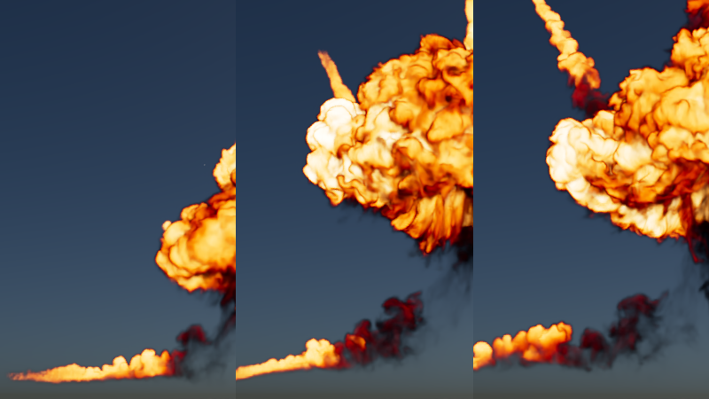

Bifrost 2.11.0.0 包含纹理采样、用于调试的新数据浏览器、Flow Wedging 技术预览以及更多内容！

以下内容概述了 Bifrost 2.11.0.0 的主要新功能：
- Flow Wedging 插件允许您将包含参数变体（“楔形”）的模拟提交到远程服务，从而释放计算机资源以在等待结果时处理其他内容。当它们准备就绪时，可以轻松加载生成的缓存以进行比较。
- 新的 sample_texture_file 节点将返回在几何体 UV 坐标处插值的图像的 RGBA 颜色。此外，read_image_data 还将返回包含图像文件的 RGBA 像素值的数组。
- 数据浏览器提供了比观察点更详细的关于沿连接流动的值的信息。它们甚至可以显示数组中包含的对象的各个特性值。
- 有一个新的、实验性的模块化绑定框架，可用于组合模块以创建程序绑定。我们提供了 limb_module 和 root_module 作为示例，您可以根据 template_module 创建自己的模块。
- 现在，节点库允许您保存您喜欢的节点：只需将指针悬停在节点上，然后单击星形即可。
- 现在，节点库和选项卡菜单都允许使用空格来表示下一个字母必须位于后续单词的开头。例如，“c att”、“c con”和“att c”都与 clear_attribute_connections 匹配。在空格后，搜索将查找以下一个字母开头并包含其余字符的词语，因此您可以通过键入“s v3”来查找 scale_to_vector3。
- 新的 contour_surface_nets 节点使用 Surface Nets 算法将体积转换为网格，作为 contour_dual_marching_cubes 节点的替代。volume_to_mesh 节点也已更新，允许您选择要使用的算法。
有关此版本中包含的功能和错误修复的完整列表，请参见 Bifrost 发行说明。
请记住，您随时可以通过访问 Autodesk Account 门户下载最新版本的 Bifrost。